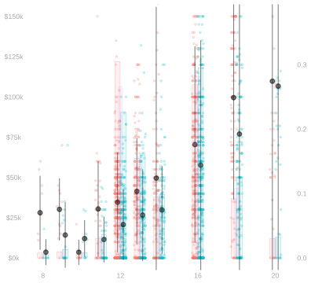
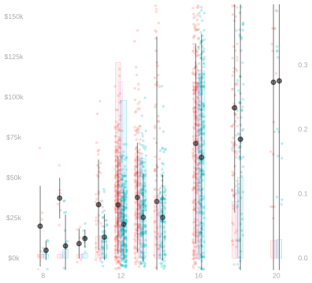

library(tidyverse)21 Homework: Calibration for Complex Summaries
$$ \newcommand{X}{} \newcommand{Y}{}
$$
Summary
This one is about interval estimation for estimation targets that are complex summaries of a population. We’ll focus on the summaries we discussed in our lecture on Multivariate Analysis and Covariate Shift. The lesson here is that calibration works exactly the same way it did when we were just estimating simpler summaries like means. Because of that, parts of this assignment will be very similar to things you did in the Week 2 and 3 Homeworks.1
I think working through some of those same problems in this more general context can help make these steps feel a bit more meaningful. For example, in Chapter 25 below, we’ll be checking that our interval estimates are properly calibrated when we use them on fake data. When you do this for a really simple summary, the process is almost too transparent. It doesn’t feel like you’re really making up a fake population, checking that it looks right, and seeing what happens when you’re sampling from it. You can see through the whole process from start to finish. In this more complex setting, you have to go step by step a bit more.
Because coverage calculations involve a fair amount of code and just calculating these estimators involves some too, this is a pretty code-heavy assignment. And when you’re new to that kind of programming, it can feel really overwhelming trying to get two pieces like this to fit together. Organizing your code well really helps. Unfortunately, some of the organizational principles you may have learned in other programming class — e.g. the kind of Object Oriented Programming where all the examples are about bank accounts — tend to be counterproductive for this kind of work. In my experience, the best way to organize your code when you’re doing something like this is to make it look as much like the math as you can. I’ll demonstrate that for you by doing versions of a lot of the same calculations I’m asking you to do.
Please don’t hesitate to reach out if you’re having trouble with any part of this. Learning new programming styles and new mathematical ideas at the same time can be a lot. And Google and ChatGPT may not be as helpful as you’d like. There’s a lot of content on the web about this programming style and these mathematical ideas, but there’s not much that talks about both at the same time.
We’ll use the tidyverse package.
Review
Let’s review the summaries we’ll be working with. We’ll stick with the same California income data we’ve used in lecture. Here are plots to think about while we review.


Consider the population \((w_1,x_1,y_1), \ldots, (w_m,x_m,y_m)\) you see above on the right. To summarize it, we might talk about mean \(\mu(w,x)\) in each column, the number of dots \(m_{wx}\) in each column, and the number of red (w=0) and green (w=1) dots \(m_w\) outright. That is, the mean income among people with a given education level and sex, the number of people with a given education level and sex, and the number of male and female people in our sample respectively. In mathematical notation, these. \[ \begin{aligned} \mu(w,x)&=\frac{1}{m_{wx}}\sum_{j:w_j=w,x_j=x} y_j && \text{ column means } \\ m_{wx} &= \sum_{j:w_j=w,x_j=x} 1 && \text{number of dots in column} \\ m_w &= \sum_{j:w_j=w} 1 && \text{total number of red (w=0) or green (w=1) dots} \end{aligned} \] In the plot, we see these means \(\mu(w,x)\) represented as pointranges (⍿) and the proportion of people of a given sex with a given level of education, \(m_{wx}/m_w\), represented by the heights of red and green bars.2
In terms of these, we can summarize the income disparity between the male and female people in our population a few pretty reasonable ways. We call the first one below the raw difference in means and the remaining three, which are all weighted averages of the within-education-level means \(\mu(1,x)-\mu(0,x)\), differences that are adjusted for education level. \[ \begin{aligned} \Delta_{\text{raw}} &= \frac{1}{m_1}\sum_{j:w_j=1} y_j - \frac{1}{m_0}\sum_{j:w_j=0} y_j \\ \Delta_0 &=\frac{1}{m_0}\sum_{j:w_j=0} \qty{\mu(1,x_j) - \mu(0, x_j)} \\ \Delta_1 &= \frac{1}{m_1}\sum_{j:w_j=1} \qty{\mu(1,x_j) - \mu(0, x_j)} \\ \Delta_{\text{all}} &= \frac{1}{m}\sum_{j=1}^m \qty{\mu(1,x_j) - \mu(0, x_j)} \end{aligned} \]
To estimate them, we can do exactly the same thing with the sample. Letting \(\hat\mu\), \(N_{wx}\), and \(N_w\) be sample versions of \(\mu\), \(m_{wx}\), and \(m_w\), we can calculate our estimators like this.
\[
\begin{aligned}
\hat \Delta_{\text{raw}} &= \frac{1}{N_1}\sum_{i: W_i=1} Y_i - \frac{1}{N_0}\sum_{i: W_i=0} Y_i \\
\hat \Delta_0 &=\frac{1}{N_0}\sum_{i: W_i=0} \qty{\hat\mu(1,X_i) - \hat \mu(0, X_i)} \\
\hat \Delta_1 &= \frac{1}{N_1}\sum_{i: W_i=1} \qty{\hat\mu(1,X_i) - \hat \mu(0, X_i)} \\
\hat \Delta_{\text{all}} &= \frac{1}{n} \sum_{i=1}^n \qty{\hat\mu(1,X_i) - \hat \mu(0, X_i)}
\end{aligned}
\]
As discussed in our lecture on Least Squares in Linear Models, the column means in the sample are really just one estimate of the mean of the corresponding column in the population. We can estimate our adjusted differences by plugging any estimate \(\hat\mu\) of the function \(\mu\) into the formulas above. The column means are the least squares estimate in the ‘all functions’ regression model, i.e., \[ \begin{aligned} \hat\mu(w,x) = \frac{1}{N_{wx}} \sum_{i:W_i=w,X_i=x} Y_i \qqtext{ minimizes } & \frac{1}{n}\sum_{i=1}^n \qty{ Y_i - m(W_i,X_i) }^2 \\ &\qqtext{ over the set of all functions $m(w,x)$}. \end{aligned} \] We get other estimates \(\hat\mu\) by minimizing the sum of squared errors over other (smaller) sets of functions of \(w\) and \(x\). For example, the ones discussed here in that lecture. In this assignment, we’ll hold off on that until our last exercise.
Estimation
We’re going to work with the same California income data we used in our last homework. But this time, instead of doing everything by hand using summaries and tables, we’ll write code that works with the raw data. You can get it like this.
ca = read.csv('https://qtm285-1.github.io/assets/data/ca-income.csv')
sam = data.frame(
w = ca$sex == 'female',
x = ca$education,
y = ca$income)We’ll use some tidyverse stuff in the calculations below.
library(tidyverse)Calculating Point Estimates
As a warm-up, we’ll repeat Exercise 5 from our last homework. We’ll calculate the following four summaries of the income discrepency between male and female residents of California. \[ \begin{aligned} \hat \Delta_{\text{raw}} &= \frac{1}{N_1}\sum_{i: W_i=1} Y_i - \frac{1}{N_0}\sum_{i: W_i=0} Y_i \\ \hat \Delta_0 &=\frac{1}{N_0}\sum_{i: W_i=0} \qty{\hat\mu(1,X_i) - \hat \mu(0, X_i)} \\ \hat \Delta_1 &= \frac{1}{N_1}\sum_{i: W_i=1} \qty{\hat\mu(1,X_i) - \hat \mu(0, X_i)} \\ \hat \Delta_{\text{all}} &= \frac{1}{n} \sum_{i=1}^n \qty{\hat\mu(1,X_i) - \hat \mu(0, X_i)} \end{aligned} \] But, instead of doing it by hand using a table, we’ll do it with code. We’ll calculate each three ways.
- Using code that looks like the formulas above, i.e., code that sums over people.
- With code that looks like the equivalent ‘histogram form’ formulas. You needed these for last week’s Exercise 5.
- With code that looks like the ‘general form’, \(\sum_{w,x} \hat\alpha(w,x) \hat\mu(w,x)\), that we talked about in our lecture on inference for complex summaries.
Ultimately, we don’t really need three implementations of the same thing. We could get by with just the ‘general form’ code. We can use it to calculate point estimates and it’s what we’ll ultimately need to do variance calculations. If you like, you can think of the other two as steps along the way.
I’ll get you started by doing \(\hat\Delta_{\text{raw}}\) and \(\hat\Delta_1\). I like to write code that looks almost exactly like what I’ve written in mathematical notation. From what I’ve seen, when people do that, they tend to introduce fewer bugs when they go from math to code. And the code tends to be easier to understand, too.
I’ll start by defining three functions: \(\hat\mu(w,x)\), \(\hat\sigma(w,x)\), and \(N_{w,x}\). Everything else I need, e.g. the histogram height \(P_{x \mid 1}(x)\) that appears in the equivalent ‘histogram form’ expression for \(\hat\Delta_1\), can be computed from these.
summaries = sam |>
group_by(w,x) |>
summarize(muhat = mean(y), sigmahat = sd(y), Nwx = n(), .groups='drop')
summary.lookup = function(column.name, summaries, default=NA) {
function(w,x) {
out = left_join(data.frame(w=w,x=x),
summaries[, c('w','x',column.name)],
by=c('w','x')) |>
pull(column.name)
out[is.na(out)] = default
out
}
}
muhat = summary.lookup('muhat', summaries)
sigmahat = summary.lookup('sigmahat', summaries)
Nwx = summary.lookup('Nwx', summaries)
W = sam$w
X = sam$x
Y = sam$y
x = unique(X)
n = length(Y)- 1
-
If you’re unfamiliar with code that looks like this, it helps to think about the types of
summary.lookup‘s input and output. The input is the easy part. Its arguments as a column name and a data frame—one that should have columns named ’w’, ‘x’, and column.name. Its output is a function. It’s a function that takes as input two vectors of the same length—a vector of values for ‘w’ and a vector of values for ‘x’—and returns the corresponding values from the column.name column of the data frame. This basic pattern—writing functions that return other functions—is a big part of what makes functional programming effective in the right hands. - 2
-
What we’re doing here is taking each row in the table
data.frame(w=w,x=x)and adding to it a columncolumn.namewith values taken from the data framesummarieswhere the ‘w’ and ‘x’ match. If there is no row insummariescorresponding to some pair ‘w’ and ‘x’ we’ve asked for—i.e. some row indata.frame(w=w,x=x)—this putsNAin that column. - 3
-
If
defaultis passed, then we returndefaultinstead ofNAfor any row indata.frame(w=w,x=x)that doesn’t have a corresponding row insummaries.
This is everything I need to do calculations that look like the formulas above.
Deltahat.raw = mean(Y[W==1]) - mean(Y[W==0])
Deltahat.1 = mean(muhat(1,X[W==1]) - muhat(0,X[W==1]))To do calculations that look like the ‘histogram form’ formulas, I need \(P_{x \mid 0}\) (Px.0 in the code below), \(P_{x \mid 1}\) (Px.1 in the code below), and \(P_x\) (Px in the code below). I can define these in terms of the function \(N_{w,x}\) implemented above.
Nw = function(w) { sum(Nwx(w, x)) }
Px.1 = function(x) { Nwx(1,x)/Nw(1) }
Px.0 = function(x) { Nwx(0,x)/Nw(0) }
Px = function(x) { (Nwx(0,x)+Nwx(1,x)) / n }Here’s how I calculate \(\hat\Delta_{\text{raw}}\) and \(\hat\Delta_1\) using the ‘histogram form’ formulas.
Deltahat.raw.histform = sum(Px.1(x)*muhat(1,x)) - sum(Px.0(x)*muhat(0,x))
Deltahat.1.histform = sum(Px.1(x)*(muhat(1,x) - muhat(0,x)))To do calculations that look like the ‘general form’, \(\sum_{w,x} \hat\alpha(w,x) \hat\mu(w,x)\), I need two new things. First, I need a function \(\hat\alpha(w,x)\) for each estimation target. I’ll start by writing them out in mathematical notation. To do this, I take a look at the ‘histogram form’ formulas and pull out the coefficients on each instance of \(\hat\mu(w,x)\).
$$ \[\begin{aligned} \hat\Delta_\text{raw} &= \sum_{x} P_{x \mid 1}(x) \ \hat\mu(1,x) - \sum_{x} P_{x \mid 0} \ \hat\mu(0,x) \\ &= \sum_{w,x} \hat\alpha_\text{raw}(w,x) \ \hat\mu(w,x) \qfor \begin{cases} \hat\alpha_\text{raw}(w,x) = P_{x \mid 1}(x) & \text{if } w=1 \\ \hat\alpha_\text{raw}(w,x) = -P_{x \mid 0}(x) & \text{if } w=0 \end{cases} \\ \hat\Delta_1 &= \sum_{x} P_{x \mid 1}(x) \qty{ \hat\mu(1,x) -\hat\mu(0,x)} \\ &= \sum_{w,x} \hat\alpha_1(w,x) \ \hat\mu(w,x) \qfor \begin{cases} \hat\alpha_1(w,x) = P_{x \mid 1}(x) & \text{if } w=1 \\ \hat\alpha_1(w,x) = -P_{x \mid 1}(x) & \text{if } w=0 \end{cases} \end{aligned}\]$$
Now, having done this, I can implement functions that look like that in R.
alphahat.raw = function(w,x) { ifelse(w==1, Px.1(x), -Px.0(x)) }
alphahat.1 = function(w,x) { ifelse(w==1, Px.1(x), -Px.1(x)) } Now that I have these, I can calculate \(\hat\Delta_\text{raw}\) and \(\hat\Delta_1\) by plugging them into the function general.form.estimate defined below, which sums the product \(\hat\alpha(w,x) \hat\mu(w,x)\) over all pairs \((w,x)\).
general.form.estimate = function(alphahat, muhat, w, x) {
grid = expand_grid(w=w, x=x)
ww = grid$w
xx = grid$x
sum(alphahat(ww,xx)*muhat(ww,xx))
}
Deltahat.raw.generalform = general.form.estimate(alphahat.raw, muhat, w=c(0,1), x=x)
Deltahat.1.generalform = general.form.estimate(alphahat.1, muhat, w=c(0,1), x=x) - 1
- This is reusable. Just make sure you pass all levels of \(w\) and \(x\) to the function.
And to check for mistakes, we can look to see if all three methods give the same answer.3
c(Deltahat.raw, Deltahat.raw.histform, Deltahat.raw.generalform)[1] -11824.38 -11824.38 -11824.38c(Deltahat.1, Deltahat.1.histform, Deltahat.1.generalform)[1] -15092.87 -15092.87 -15092.87Now it’s your turn.
Calibrating Interval Estimates
Now that we’ve got all this machinery in place, we’re ready to calibrate some interval estimates around them. We’ll start by bootstrapping the point estimates we just calculated. As in the previous exercise, I’ll do it for \(\hat\Delta_\text{raw}\) and \(\hat\Delta_1\) and you’ll do it for \(\hat\Delta_0\) and \(\hat\Delta_\text{all}\). You can re-use a lot of my code, so all you’ll need to do is add a few lines.
bootstrap.estimates = 1:10000 |> map(function(.) {
I.star = sample(1:n, n, replace=TRUE)
Wstar = W[I.star]
Xstar = X[I.star]
Ystar = Y[I.star]
summaries.star = sam[I.star,] |>
group_by(w,x) |>
summarize(muhat = mean(y), .groups='drop')
muhat.star = summary.lookup('muhat', summaries.star, default=mean(Ystar))
data.frame(
Deltahat.raw = mean(Ystar[Wstar==1]) - mean(Ystar[Wstar==0]),
Deltahat.1 = mean(muhat.star(1,Xstar[Wstar==1]) -
muhat.star(0,Xstar[Wstar==1]))
)
}) |> bind_rows()- 1
- Do what follows 10,000 times.
- 2
- Sample with replacement from the sample to get a bootstrap sample.
- 3
-
Summarize the bootstrap sample to get a bootstrap-sample version of the function \(\hat\mu(w,x)\). See Note 24.1 below for what passing
defaultis doing in the call tosummary.lookup. - 4
- Calculate the estimation target using the bootstrap-sample stuff. All you’ll need to do is add a few lines here.
- 5
-
This is how we get a data frame with 10,000 rows and two columns, ‘Deltahat.raw’ and ‘Deltahat.1’. What map gives us is a list of 10,000 data frames with one row each (and the right two columns).
bind_rowswill combine them into one data frame.
Here are histograms showing, for \(\hat\Delta_\text{raw}\) and \(\hat\Delta_1\), its bootstrap sampling distribution. I’ve used the function width to calculate the width of the middle 95% of each distribution and draw that, as well as the distribution’s mean, in as vertical lines. And I’ve added my point estimate as a blue dot, too.
scales = list(scale_y = scale_y_continuous(breaks=seq(0, .0002, by=.00002)),
scale_x = scale_x_continuous(breaks=seq(-40000, 10000, by=10000)),
coord_cartesian(xlim=c(-40000, 10000), ylim=c(0, .0002)))
bootstrap.plot.raw = ggplot() +
geom_histogram(aes(x=Deltahat.raw, y=after_stat(density)),
bins=50, alpha=.2, data=bootstrap.estimates) +
geom_point(aes(x=Deltahat.raw, y=.00005), color='blue') +
width_annotations(bootstrap.estimates$Deltahat.raw)
bootstrap.plot.1 = ggplot() +
geom_histogram(aes(x=Deltahat.1, y=after_stat(density)),
bins=50, alpha=.2, data=bootstrap.estimates) +
geom_point(aes(x=Deltahat.1, y=.00005), color='blue') +
width_annotations(bootstrap.estimates$Deltahat.1)
bootstrap.plot.raw + scales
bootstrap.plot.1 + scales

And here are 95% intervals around my point estimates, calibrated using the bootstrap.
bootstrap.interval.raw = Deltahat.raw +
c(-1,1)*width(bootstrap.estimates$Deltahat.raw)/2
bootstrap.interval.1 = Deltahat.1 +
c(-1,1)*width(bootstrap.estimates$Deltahat.1)/2bootstrap.interval.raw[1] -17265.902 -6382.859bootstrap.interval.1[1] -20400.126 -9785.606Here’s a review exercise on connecting what we see in the plot to the intervals we’ve reported.
Now it’s your turn to do all this for \(\hat\Delta_0\) and \(\hat\Delta_\text{all}\).
Solution
To get the bootstrap sampling distributions of these new estimators, all we need to do is add a few lines to the bootstrap code above. Here it is.
bootstrap.estimates = 1:10000 |> map(function(.) {
I.star = sample(1:n, n, replace=TRUE)
Wstar = W[I.star]
Xstar = X[I.star]
Ystar = Y[I.star]
summaries.star = sam[I.star,] |>
group_by(w,x) |>
summarize(muhat = mean(y), .groups='drop')
muhat.star = summary.lookup('muhat', summaries.star, default=mean(Ystar))
data.frame(
Deltahat.raw = mean(Ystar[Wstar==1]) - mean(Ystar[Wstar==0]),
Deltahat.1 = mean(muhat.star(1,Xstar[Wstar==1]) -
muhat.star(0,Xstar[Wstar==1])),
Deltahat.0 = mean(muhat.star(1, Xstar[Wstar==0]) -
muhat.star(0, Xstar[Wstar==0])),
Deltahat.all = mean(muhat.star(1, Xstar) -
muhat.star(0, Xstar))
)
}) |> bind_rows() - 1
- These are the new lines.
To plot the distributions, we just have to change a few names in the plotting code above. This code uses the variables Deltahat.0 and Deltahat.all defined above in the solution to Exercise 24.1.
bootstrap.plot.0 = ggplot() +
geom_histogram(aes(x=Deltahat.0, y=after_stat(density)),
bins=50, alpha=.2, data=bootstrap.estimates) +
geom_point(aes(x=Deltahat.0, y=.00005), color='blue') +
width_annotations(bootstrap.estimates$Deltahat.0)
bootstrap.plot.all = ggplot() +
geom_histogram(aes(x=Deltahat.all, y=after_stat(density)),
bins=50, alpha=.2, data=bootstrap.estimates) +
geom_point(aes(x=Deltahat.all, y=.00005), color='blue') +
width_annotations(bootstrap.estimates$Deltahat.all)
bootstrap.plot.all + scales
bootstrap.plot.all + scales

And here are 95% intervals around my point estimates, calibrated using the bootstrap.
bootstrap.interval.0 = Deltahat.0 +
c(-1,1)*width(bootstrap.estimates$Deltahat.0)/2
bootstrap.interval.all = Deltahat.all +
c(-1,1)*width(bootstrap.estimates$Deltahat.all)/2bootstrap.interval.0[1] -19581.55 -10155.26bootstrap.interval.all[1] -19908.54 -10048.48Let’s check that these are pretty similar to what we get using normal approximation. We’ll use our variance formula from our lecture on Inference for Complicated Summaries. And, as in lecture, we’ll ignore the term that reflects the randomness of our coefficients. The one written in red in that lecture.
grid = expand_grid(w=c(0,1), x=x)
ww = grid$w
xx = grid$x
Vhat.raw = sum(alphahat.raw(ww,xx)^2 * sigmahat(ww,xx)^2/Nwx(ww,xx))
Vhat.1 = sum(alphahat.1(ww,xx)^2 * sigmahat(ww,xx)^2/Nwx(ww,xx))Here are the plots above with our normal-approximation-based estimates of the sampling distribution draw on top of the bootstrap ones.
normal.interval.raw = Deltahat.raw + 1.96*c(-1,1)*sqrt(Vhat.raw)
normal.interval.1 = Deltahat.1 + 1.96*c(-1,1)*sqrt(Vhat.1)
normal.interval.raw[1] -16896.428 -6752.332normal.interval.1[1] -20346.148 -9839.583Checking Your Estimates using Fake Data
At this point, we have confidence intervals. But this is our first time doing inference for complicated summaries like this, so it’s worth checking that they have the coverage we want. We can’t do that directly because coverage is about the relationship between our estimation target and our estimator’s sampling distribution and we don’t know either—those are functions of our population and we only have a sample. What we can do is try all this out using fake data.
Simulating Fake Data
To get a fake population that looks about right, we’ll use a two-step process.5
- To get pairs \((w_1,x_1), \ldots, (w_m,x_m)\) with a distribution that looks like the one in our sample, we’ll just draw them (with replacement) from our sample.
- To get corresponding outcomes \(y_1 \ldots y_m\) that look like the ones in our sample, we’ll add some normally-distributed fuzz to the column means within the sample. We’ll choose the amount of fuzz so that the column standard deviations in our population match those in the sample.
set.seed(1)
m = n*10
I = sample(1:n, m, replace=TRUE)
pop = sam[I,]
fuzz = rnorm(m)*sigmahat(pop$w, pop$x)
pop$y = muhat(pop$w, pop$x) + fuzz pop.summaries = pop |>
group_by(w,x) |>
summarize(mu = mean(y), sigma = sd(y), Nwx = n(), .groups='drop')And now that we have a population, we can sample with replacement from it.
J = sample(1:m, n, replace=TRUE)
fake.sam = pop[J,]Here’s the actual sample, the fake population, and the sample we just drew from it. Not bad!



Calculating Sampling Distributions
Now we’re going to do something a lot like what we did in the ‘we have a population’ questions we looked at in the Week 1 and Week 3 Homeworks, where we were working with our NBA data. In particular, Exercise 2 and Exercise 4 from Week 1 and Exercise 11 from Week 3. All that’s really changed is the way we calculate our estimator \(\hat\theta\) and our estimation target \(\theta\). If we’re talking about estimating the raw difference in means, \(\theta=\Delta_\text{raw}\) and \(\hat\theta=\hat\Delta_\text{raw}\); if we’re talking about estimating the average-over-green-dots adjusted difference, \(\theta=\Delta_1\) and \(\hat\theta=\hat\Delta_1\); etc.
Let’s take a look at the sampling distributions of our estimators \(\hat\Delta_\text{raw}\) and \(\hat\Delta_1\) when we draw samples of size \(n=2271\) with replacement from the fake population. For context, we’ll draw in our estimation targets \(\Delta_\text{raw}\) and \(\Delta_1\) as green vertical lines. This code will calculate those targets.
w = pop$w
x = pop$x
y = pop$y
mu = summary.lookup('mu', pop.summaries)
target = data.frame(Delta.raw = mean(y[w==1]) - mean(y[w==0]),
Delta.1 = mean(mu(1,x[w==1]) - mu(0,x[w==1])))This code will calculate our the sampling distributions of our estimators.
sampling.distribution = 1:10000 |> map(function(.) {
J = sample(1:m, n, replace=TRUE)
fake.sam = pop[J,]
W = fake.sam$w
X = fake.sam$x
Y = fake.sam$y
summaries = fake.sam |> group_by(w,x) |> summarize(muhat = mean(y), .groups='drop')
muhat = summary.lookup('muhat', summaries, default=mean(Y))
data.frame(Deltahat.raw = mean(Y[W==1]) - mean(Y[W==0]),
Deltahat.1 = mean(muhat(1,X[W==1]) - muhat(0,X[W==1])))
}) |> bind_rows()- 1
- Do what follows 10,000 times.
- 2
- Draw a sample of size \(n=2271\) with replacement from the fake population.
- 3
- Calculate the column mean function \(\hat\mu\).
- 4
- Use it to calculate our estimates \(\hat\Delta_\text{raw}\) and \(\hat\Delta_1\).
- 5
-
This is how we get a data frame with 10,000 rows and two columns, ‘Deltahat.raw’ and ‘Deltahat.1’. What
mapgives us is a list of 10,000 data frames with one row each (and the right two columns).bind_rowswill combine them into one data frame.
Here are those sampling distributions plotted.
plot.sampling.distribution = function(estimates, target) {
w=width(estimates)
ggplot() +
geom_vline(xintercept = target, color='green', linewidth=2, alpha=.5) +
geom_histogram(aes(x=estimates, y=after_stat(density)), bins=50, alpha=.2) +
width_annotations(estimates) +
scales
}
plot.sampling.distribution(sampling.distribution$Deltahat.raw, target$Delta.raw)
plot.sampling.distribution(sampling.distribution$Deltahat.1, target$Delta.1)

Now it’s your turn to do this for \(\hat\Delta_0\) and \(\hat\Delta_\text{all}\).
Here’s a follow-up. You’re going to calculate the coverage of the confidence intervals discussed in the previous section. This one I’m leaving to you. I’m not going to do for \(\hat\Delta_{\text{all}}\) and \(\hat\Delta_1\) myself.
Now it’s time to do something a little different. For the first time in the semester, you’d going to estimate the population column means \(\mu(w,x)\) using least squares.6
Here’s an extra-credit follow-up that looks back to our last exercise from Practice Midterm 1.
If you get stuck on one of those parts, reviewing the solutions for those assignments may help.↩︎
The total number of red and green dots, \(m_w\), on the other hand, isn’t very visible in the plot. You’d actually have to count dots.↩︎
If you see a tiny difference, like \(10^{-10}\) or so, don’t worry about it. Computer arithmetic is imperfect, so those happen when you use different mathematically equivalent formulas.↩︎
If you’ve come across the idea of regularization before, you can think of this choice of \(\bar Y\) as a form of regularization toward a common mean. Elaborate versions of this tend to be called ‘multilevel models’ or ‘hierarchical models’. This is an important topic, but it’s not one we’ll have time to cover in this class.↩︎
This is basically what I did to get the fake population we’ve been looking at in lecture and Figure 23.1. I did something a bit fancier than adding gaussian noise in step 2, but not that much fancier.↩︎
If you want, you could argue it’s not really the first time. You’ve been estimating \(\mu(w,x)\) by least squares all along, since column means are the least squares estimator in the ‘all functions’ model. But this is the first time you’re going to do it with a different model.↩︎
If you caught that and chose not to do that, that’s great. But if you catch something like it again, please shoot me an email so I can send out a correction for everyone else.↩︎
The correct formula is a little complicated. I’ll explain what it looks like and why you might not really want to bother with it next week.↩︎
You’ll have to use a wider interval unless you got 95% coverage in Exercise 25.2. You shouldn’t have. If you did, go back and try to figure out what went wrong.↩︎
To avoid any confusion: Yes, I did just gave you one of the three things I asked you to report.↩︎